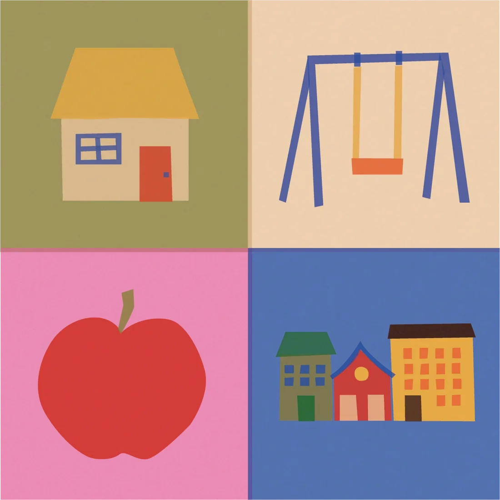
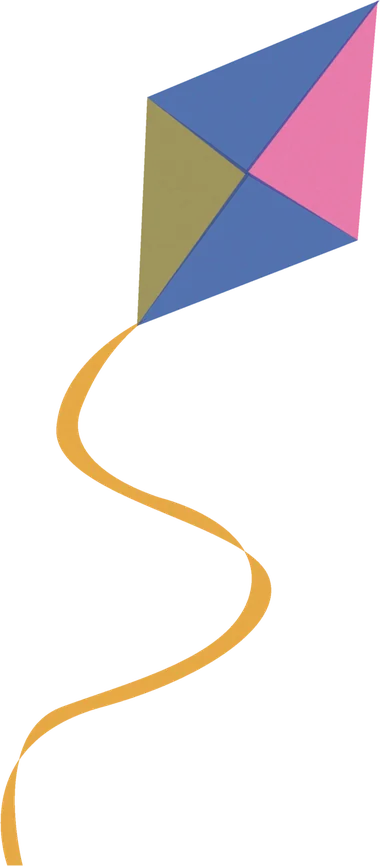
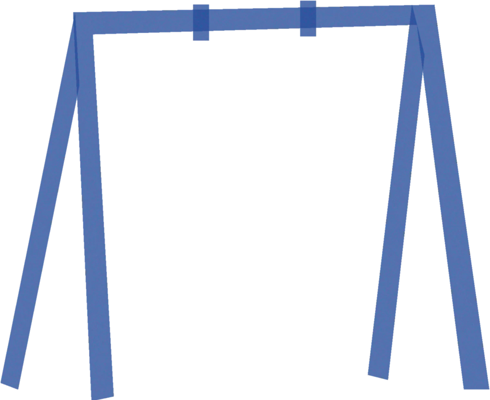
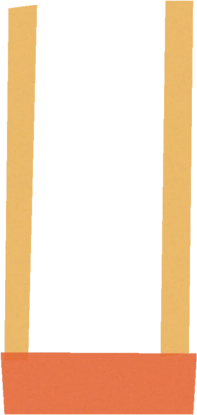
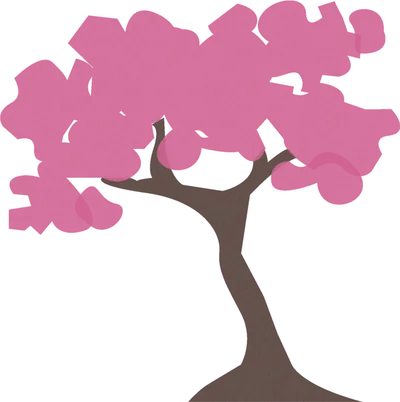
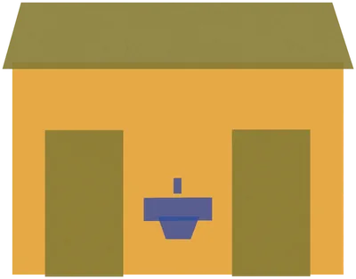
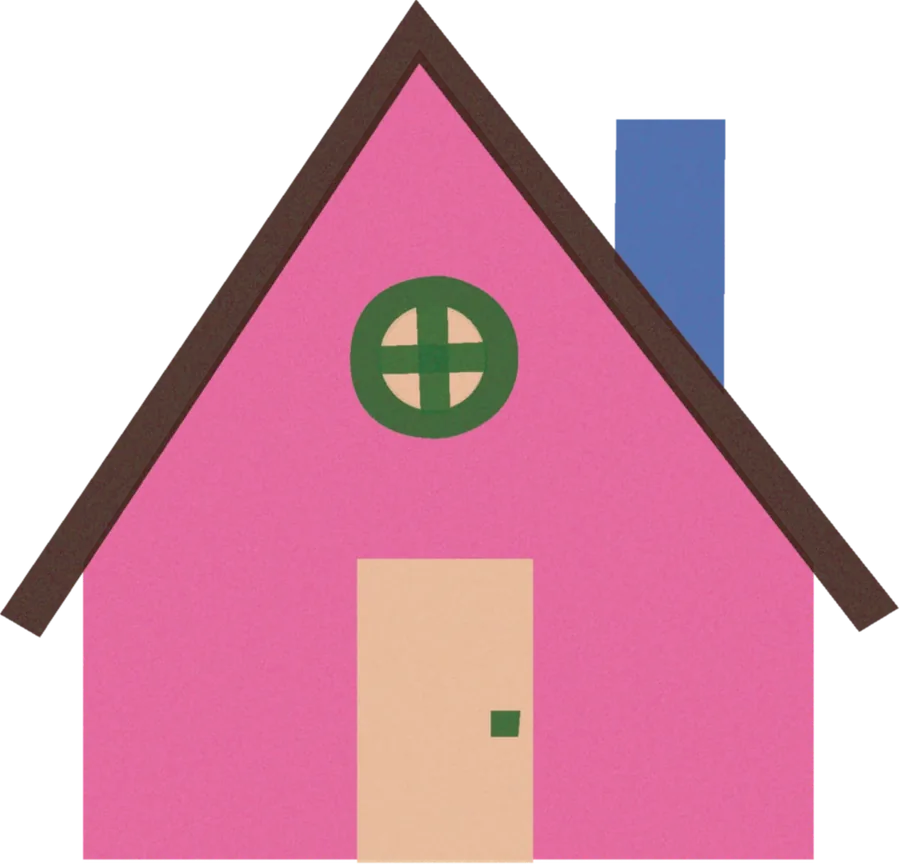
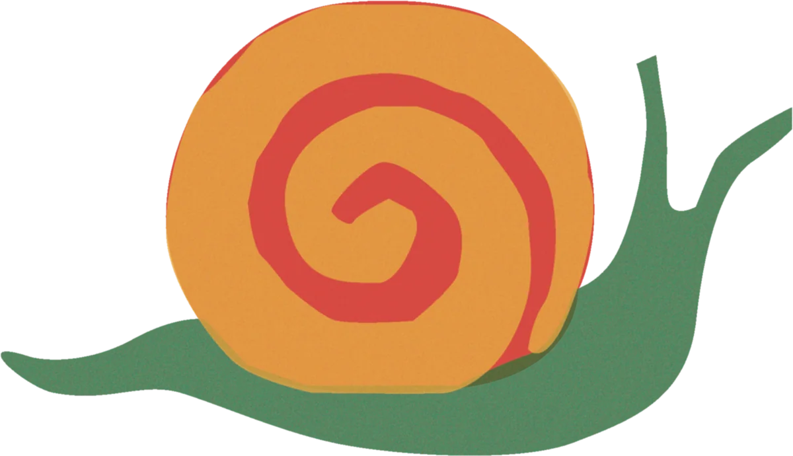

Parent-led · Nonpartisan
We fight for two things: parks your kids can actually use, and homes they can afford to own. No party politics. Just parents who want SLC to work for their kids.


In 2024, Salt Lake City closed four elementary schools. Not because of budget cuts. Because the kids weren't there. Families are leaving the urban core, and the city has no organized voice fighting to keep them.
"Two things sit at the center of that equation: parks families can use and homes families can own."
Four SLC elementary schools shut down last year. Not from budget cuts, but from empty desks. Families left, and took the next generation with them.
SLC keeps growing in population, investment, and profile. But the share of households with school-age children keeps shrinking. A city can grow and still hollow out.
Not new parks. Better ones. We push for the basics every kid deserves, and we hold the city accountable for delivering them.


Kids should be able to run around without parents on edge. Real attention to safety, not lip service.

Three hundred days of sun is an asset, unless there's no shade. Splash pads and tree canopy aren't luxuries in a desert city.

A locked or filthy bathroom ends a family's visit. It's a small thing with an outsized impact on whether parks get used.
Trash picked up. Equipment fixed. Graffiti gone. In every neighborhood, not just the ones that get attention.

Everyone's talking about density. Almost no one's talking about family-scale housing. There's a difference between adding units and building a city where families can put down roots.
Townhomes and for-sale homes with room for kids should be an explicit planning priority, not an afterthought when studios fill up.
Row houses, cottage clusters, townhomes in walkable neighborhoods. Growth that makes room for families, not growth that prices them out.
Renting doesn't build roots. Ownership ties families to a place and gives them a stake in it. We push for policies that make that possible.
Family-sized homes are disappearing to investor conversions and short-term rentals. Protecting existing stock is just as important as building new.
We're not anti-growth. We think SLC can grow and still be a city where kids thrive, but only if someone is consistently making that case. Safe parks and family-scale housing aren't partisan issues. They're what every parent wants, regardless of how they vote.

That won't happen on its own. It takes parents showing up: at city council, in the budget process, in the conversation. If you believe SLC should make room for families, we want you with us.
No spam. No party politics. Just parents who want SLC to work for kids.